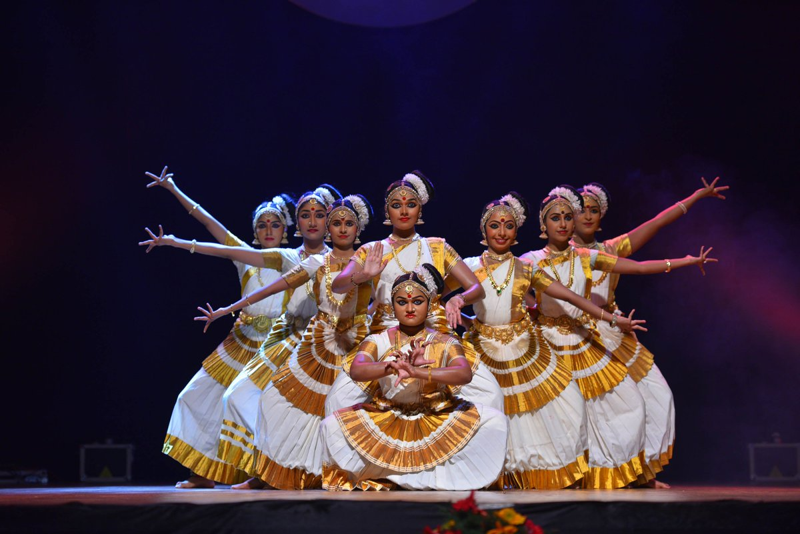

MOHINIYATTAM

Mohiniyattam is a beautiful and graceful classical dance form from the southern Indian state of Kerala. It is a form of art that has its roots in the devotional traditions of Hindu temples and is often performed by women. Mohiniyattam is a dance that is characterized by fluid, graceful movements, subtle facial expressions, and intricate hand gestures.
The origins of Mohiniyattam can be traced back to the Devadasi system, a tradition where young girls were dedicated to temples and were trained in music, dance, and other performing arts. Mohiniyattam is believed to have been a popular art form performed by these women in the temples of Kerala. Over time, the dance form evolved and became more widely practiced, eventually becoming a classical dance form recognized by the Indian government.